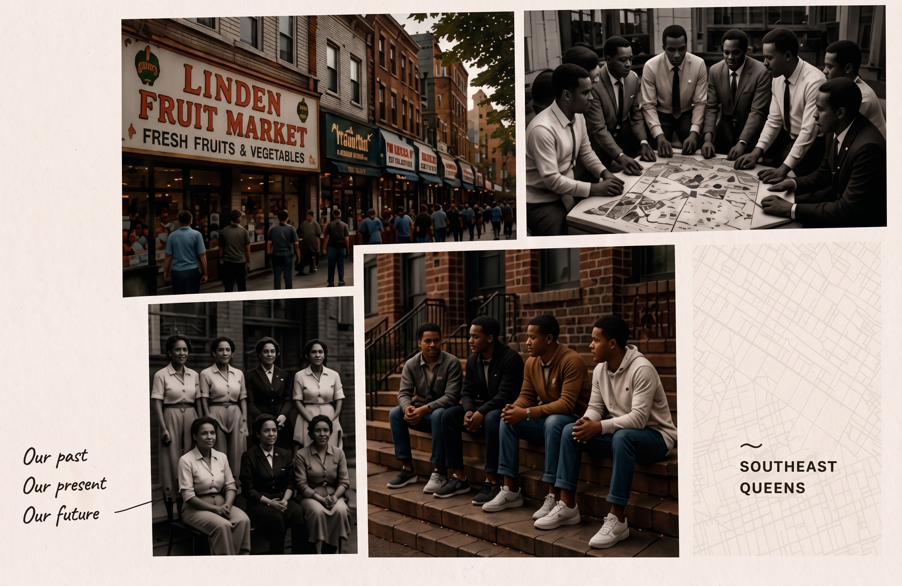
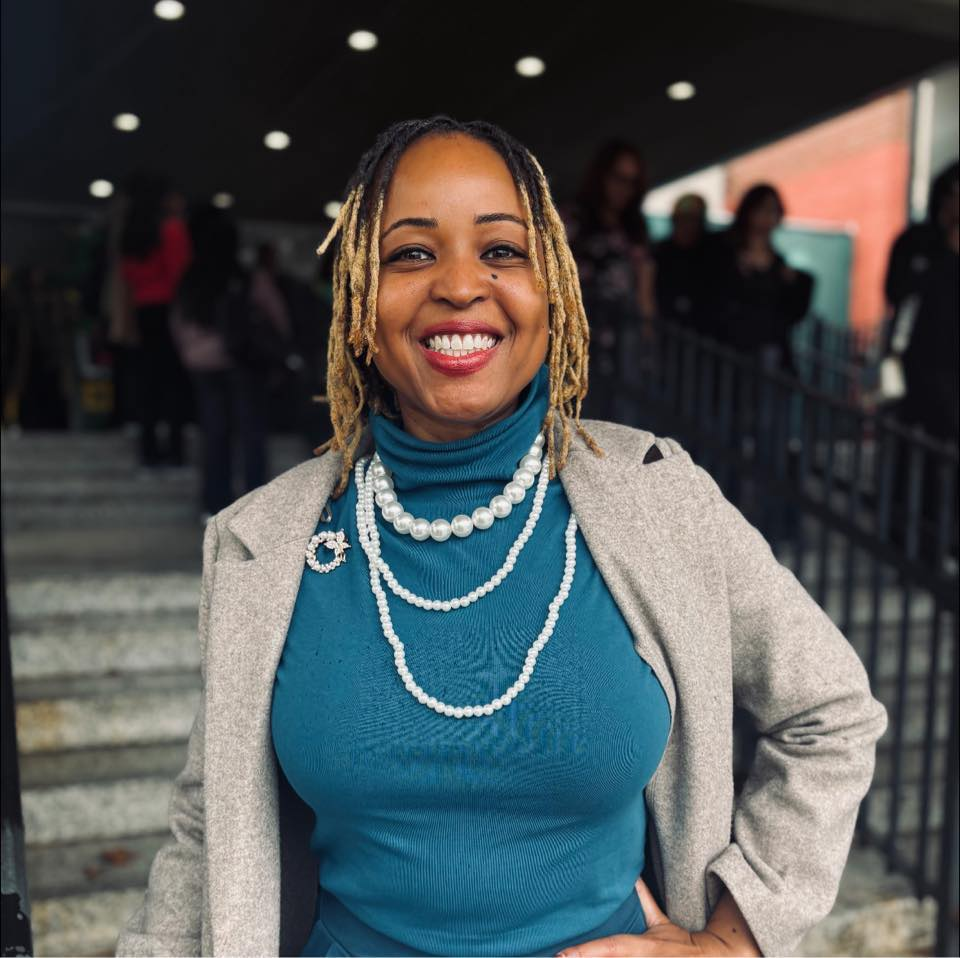
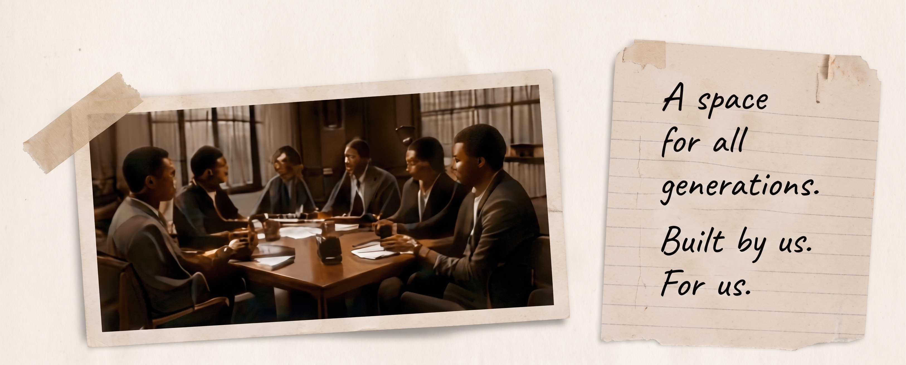
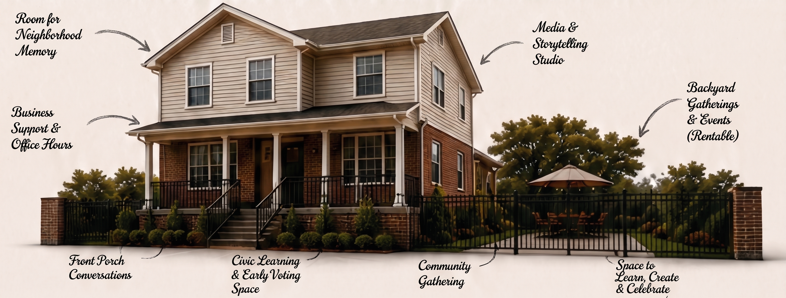

What We're Building
(Mission)
We build knowledge, tools, and relationships that strengthen Southeast Queens communities and create pathways to ownership, opportunity, and power.
A Closer Look
BCC exists to understand Southeast Queens deeply and to help shape what comes next. This is our perspective, our purpose, and our commitment to the community we come from and build within.
Our past
Our present
Our future

What We're Building
(Mission)
We build knowledge, tools, and relationships that strengthen Southeast Queens communities and create pathways to ownership, opportunity, and power.
What We're Working Toward
(Vision)
A Southeast Queens where our history is honored, our businesses thrive, our youth lead, and our communities shape what's next.
Things We Think About
A Note From Our Founder
I've spent my life in Southeast Queens-listening, learning, building, connecting dots most people never get to see. Through BPN, I saw the power of visibility. Through community work, I saw the power of trust. But the more I looked, the more I realized we needed something deeper: research, strategy, ownership, and systems that actually serve us.
BCC is that answer. It's the next chapter of the work-rooted in love, driven by truth, and focused on building what our community deserves. This is for Queens. This is for us. And we're just getting started.
Alecia

One Possible Future
We imagine a place rooted in the neighborhood. A home for our history, our businesses, our youth, and our future. A Civic House where knowledge lives, opportunity grows, and community holds the way.

